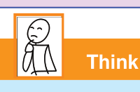

Chapter Three
Drawing
Introduction
Fine art uses drawings as a complete language that people can see and understand even if they do not know how to read and write.
In this chapter, you will learn to draw images of various objects using a pencil.
The competencies developed will enable you to draw images of various objects skilfully.

Think
How to draw images of objects using a pencil
Drawing images of various objects using pencils
Drawing images using a pencil is an art that involves drawing images or sketches with pencils.
The tools used include HB, 2B and 4B pencils, drawing paper, and an eraser.
Steps to consider when drawing images of various objects using pencils:
1.
Prepare the drawing materials.
You will need various drwawing materials such as drawing paper, an eraser, a sharpener and different types of pencils such as HB, 2B and 4B;
2.
Start by drawing simple shapes like circles, squares and lines that form the basis of other drawings;